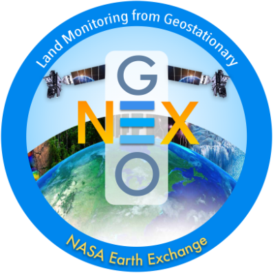
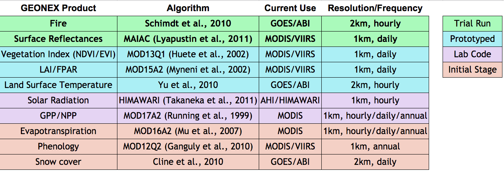

Welcome to GeoNEX
A collection of documentation for GeoNEX users.
This GeoNEX project aims to address key challenges of data-driven geostationary satellite research, including but are not limited to, access to sufficient computing resources, massive data transfer, standardized analysis workflows and reproducibility to communicate analyses so that they can be reused and extended.
Before you get started, you might want to check out our project slides.
This documentation includes both guidelines, examples and source code docs.
The documentation is accessible at https://geonex.readthedocs.io
GeoNEX Architecture
A simplified system architecture diagram is shown below.
Geostationary Satellite Images (GOES16/17, Himawari) are hosted on Cloud-based storage (AWS S3 buckets); specific algorithms were registered on Knowledge Hub and hosted on various docker registery services. The batch system includes two sub-parts: AWS Real-time Runner and HPC batcher, which manage computation distribution among a pool of Compute Servers, and launch algorithms container when rules were met. Outputs buckets, GeoNEX database and restful APIs were deployed on top of them to support another two web application: Dashboard and Notebook. The former application is a console to help users to access resources and tasks of GeoNEX, while the latter is a R & D environment for fast-prototype, exploration and education purposes.

Users can access and analyze data from the public catalog using GeoNEX containers as as well as their own analysis once dockerized. Also users can leverage their work to powerful features provided by GEONEX, including real-time analytics, standard preprocessing, cloud detection, visualization, etc.
GeoNEX Website
GeoNEX Data Hub
GeoNEX Knowledge Hub
AWS Real-time Runner
HPC Batch System
GeoNEX Dashboard @ YF
Notebook
GeoNEX Glossary
NOTICE: About the word “IMAGE" and “Container”: Note that we avoid the use of the word IMAGE as it is way too vague and it is heavily overloaded, and also easily confused with the Remote-Sensed Data Products from satellite or Imagery-based Map.** In GeoNEX, we use the word "image" to denote very different types of data and data products. We want to evangelize a new way to talk about algorithms/softwares/services running on GeoNEX.
For terms/items from Amazon/AWS not mentioned in this glossary, please refer to the AWS Glossary.
Pipeline (GeoNEX)
A dockerized algorithm, within it a combination of a file system and GEO application was built. It can be hosted on public docker registry services (hub.docker; AWS ECR; gcr.io)
Task (GeoNEX)
Tasks - the runtime instance of a GEONEX pipeline. a standard unit on GeoNEX approved by the administrator to finish specific processing/analysis jobs. User enable to see all running, stopped, or finished tasks in the dashboard. Some user with permission also can view products from the specific tasks, and check log files for each task. These tasks are automatically executed at the back-end using EC2 instances. User can also customize the instances with different types and sizes for running each container.
Runner (GeoNEX)
Related to specific output buckets, which can be browsed in the viewer.
Account (GeoNEX)
You need to create it to get access to GEONEX resources, including algorithms, runners, tasks, AWS instances and buckets.
Administrator (GeoNEX)
Refers to those tasked with monitoring, configuring or otherwise utilizing GeoNEX in an operational deployment.
AWS Access Keys
Access credentials that give you access to AWS to act as a IAM user programatically or from the command line. For more information, see the AWS IAM Documentation.
Bucket
An Amazon S3 cloud storage resource. For more information, see the AWS Bucket Documentation.
The GeoNEX algorithm pool enables to display the latest ready datasets for downloading or used by scientists. NOAA GOES-16 and GOES-17 have been trackable real-time and Himawari8 is semi real-time.
Cloudwatch
AWS service that allows logging and metrics collections on various cloud resources you have in AWS.
For more information, see the AWS User Guide.
Common Metadata Repository (CMR)
"A high-performance, high-quality, continuously evolving metadata system that catalogs Earth Science data and associated service metadata records". For more information, see NASA's CMR page.
Distributed Active Archive Center (DAAC)
Refers to a specific organization that's part of NASA's distributed system of archive centers. For more information see EOSDIS's DAAC page
ECS
Amazon's Elastic Container Service. For more information, see AWS's developer guide.
Execution (GeoNEX)
A GeoNEX execution refers to a single execution of a (GeoNEX) Pipeline.
GIBS
Global Imagery Browse Services provides quick access to over 800 satellite imagery products, covering every part of the world. Through responsive and highly available web services, it enables interactive exploration of data to support a wide range of applications including scientific research, applied sciences, natural hazard monitoring, and outreach.
Granule
A granule is the smallest aggregation of data that can be independently managed (described, inventoried, and retrieved). Granules are always associated with a collection, which is a grouping of granules. A granule is a grouping of data files.
IAM
AWS Identity and Access Management.
For more information, see AWS IAMs.
Kinesis
Amazon's platform for streaming data on AWS. See AWS Kinesis for more information.
Lambda
AWS's cloud service that lets you run code without provisioning or managing servers.
For more information, see AWS's lambda page.
Provider
Data source that generates and/or distributes data for GeoNEX Pipeline to act upon.
Rule
Rules are configurable scheduled events that trigger runner based on various criteria.
S3
Amazon's Simple Storage Service provides data object storage in the cloud. Used in GeoNEX to store configuration, data and more.
For more information, see AWS's s3 page.
{kind=link}
SNS
Amazon's Simple Notification Service provides a messaging service that allows publication of and subscription to events. Used in GeoNEX to trigger workflow events, track event failures, and others.
For more information, see AWS's SNS page.
SQS
Amazon's Simple Queue Service. For more information, see AWS's SQS page.
Stack
A collection of AWS resources you can manage as a single unit.
In the context of GeoNEX this is managed via CloudFormation Templates.
Step Function
AWS's web service that allows you to compose complex workflows as a state machine comprised of tasks (Lambdas, activities hosted on EC2/ECS, some AWS service APIs, etc). See AWS's Step Function Documentation for more information. In the context of GeoNEX these are the underlying AWS service used to create Workflows.
Contributing
Please refer to: https://github.com/nasa/cumulus/blob/master/CONTRIBUTING.md for information
Policies
After registering their images, guest user opens GEONEX Images tab, and clicks “ Request” button. The dashboard will automatically send an email notification to system administrator, and let him/her know there is one image need him/her approve. Administrator logins the dashboard and clicks “Approve” button, then finish the approval.
Policies
Best Practices
Frequently Asked Questions
How did GEONEX works?
Which sensors supported?
We aim to support the land monitoring capabilities of new generation geostationary platforms, includes:
- ABI – Advanced Baseline Imager on GOES-R/T
- AHI – Advanced Himawari Imager on Himawari
- AMI – Advanced Meteorological Imager on GEO-KOMPSAT2
- FCI – Flexible Combined Imager on MTG
- AGRI – Advanced Geosynchronous Radiation Imager on Fengyun-4
What products in plan?

What are the relationships between NEX, GeoNEX and OpenNEX?
NASA Earth eXchange (NEX), a collaborative supercomputing and data analytics platform, improves the availability of Earth science data from NASA missions and other sources, models, analysis tools and research results through a centralized environment that fosters knowledge sharing, collaboration, and innovation.
GEONEX (https://geonex.org) is a web-based scientific platform for earth science community to analyze the new generation of Geostationary (GEO) datasets.
OpenNEX is the knowledge discovery portal of NEX.